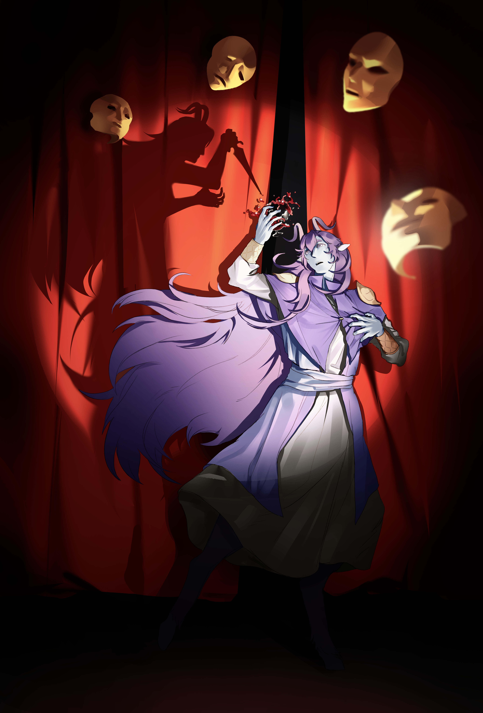
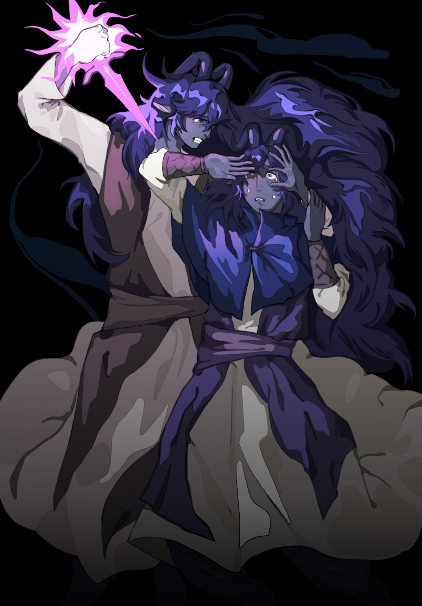
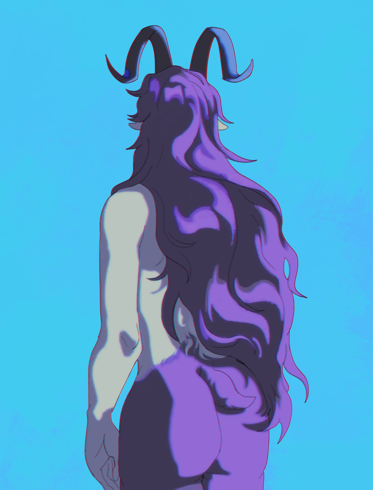
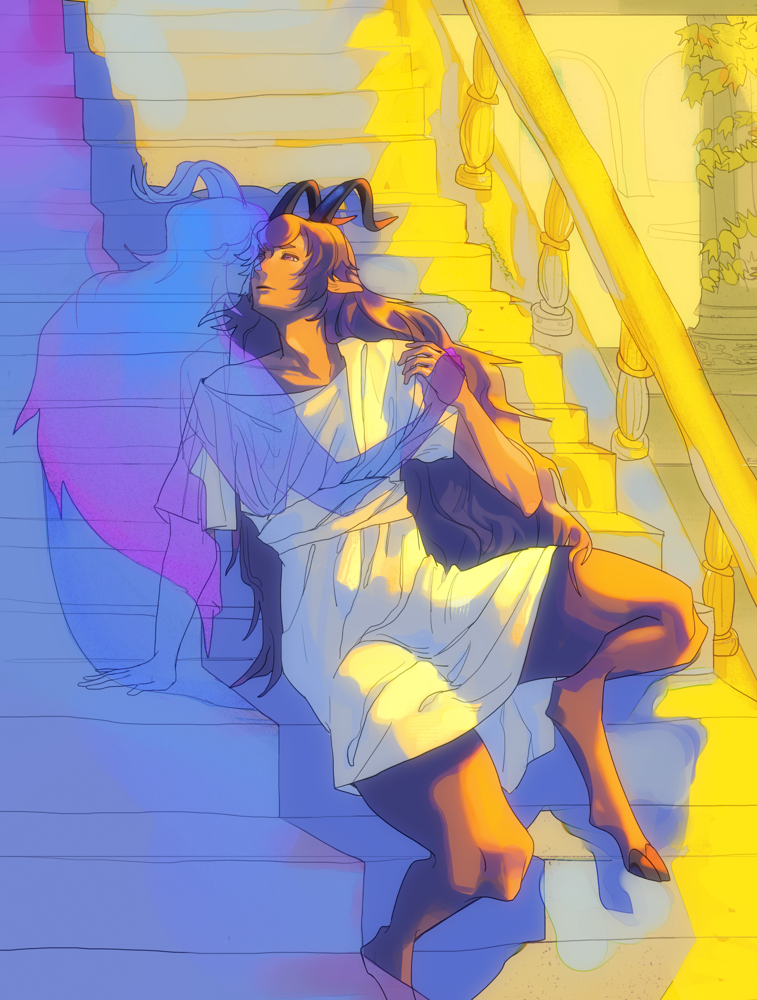

Arts Management Intern
Toronto Outdoor Art Fair
Supported the 65th edition of Canada’s longest-running outdoor art fair, working across artist coordination, community outreach, event operations, digital content, and organizational research.
Hello!
I’m an undergraduate in the Arts Management Specialist Program at UTSC. I'm working across arts and cultural management, public engagement, cultural strategy and art practices, where my interests lie in.
I'm a dog person (with a soft spot for cats and rats too).
Toronto Outdoor Art Fair
Supported the 65th edition of Canada’s longest-running outdoor art fair, working across artist coordination, community outreach, event operations, digital content, and organizational research.
Work In Culture × UTSC Industry Event
Supported an arts and culture industry networking event for students, professionals, and sector partners, assisting with participant flow, session transitions, and on-site communication.
Guangzhou Nanling Automobile Co. Ltd.
Developed short videos and visual content for social media marketing, adapting creative materials to support audience engagement and digital communication. Supported daily livestream operations and analyzed engagement data.
Doggy House
Maintained a clean, safe, and comfortable environment for dogs in daily care. Managed the daycare’s Instagram account by photographing dogs and publishing daily social media updates for clients and followers.
Honours Bachelor of Arts · Specialist in Arts Management (Field Placement Stream)
Coursework across arts management, cultural organizations, audience development, equity and inclusion, marketing, project management, and financial management in the arts.
High School Diploma
FADO Performance Art Award 2026.
Practice work for verbal performance art. CARFAC Award 2026.
A short animation made in 2026.
A collection of digital drawings developed from a Dungeons & Dragons campaign, exploring visual storytelling. The name of the Satyr (my player character) is Tam Lin.




Essays, research, and reflections will be added here soon.